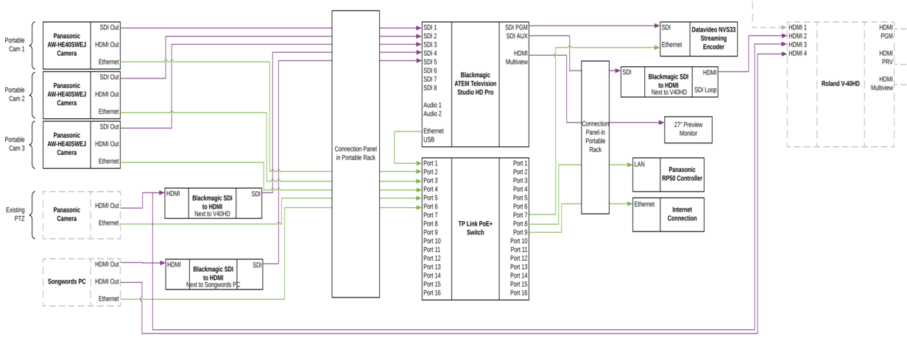
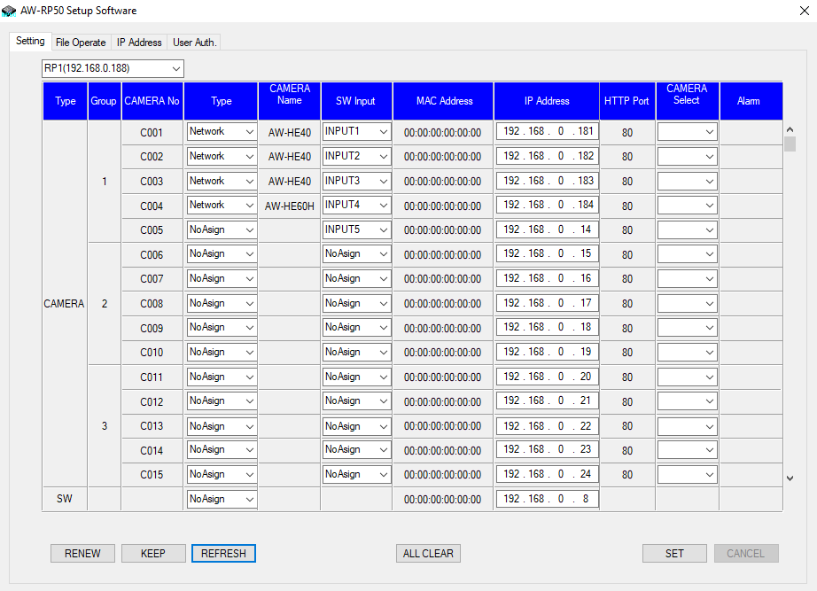
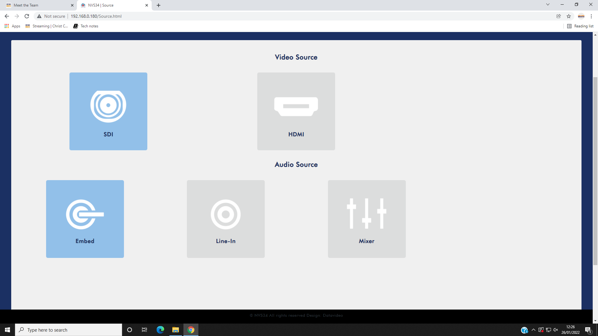
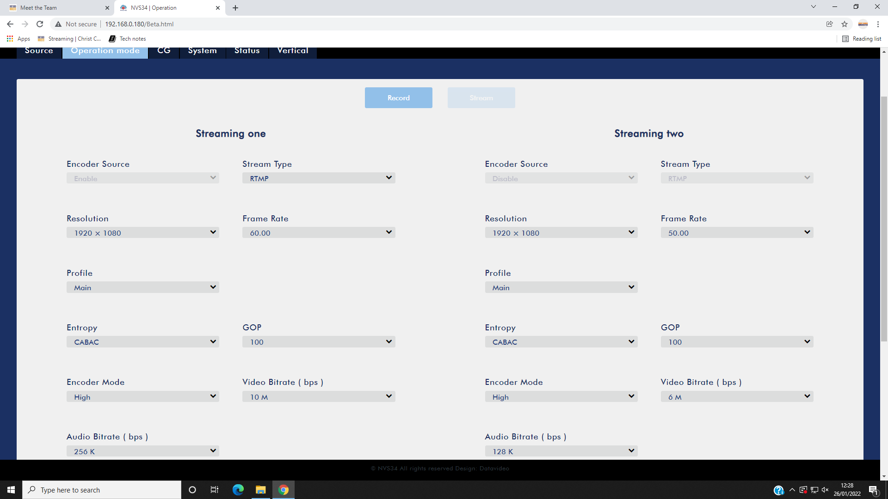
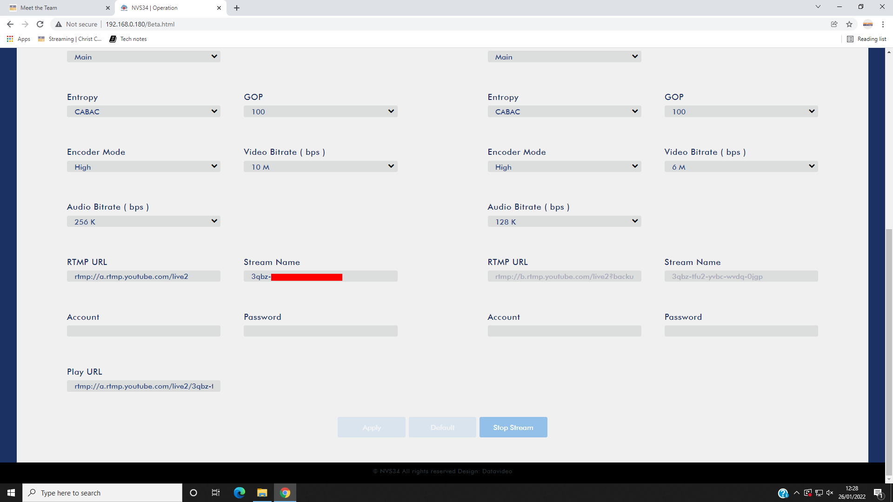
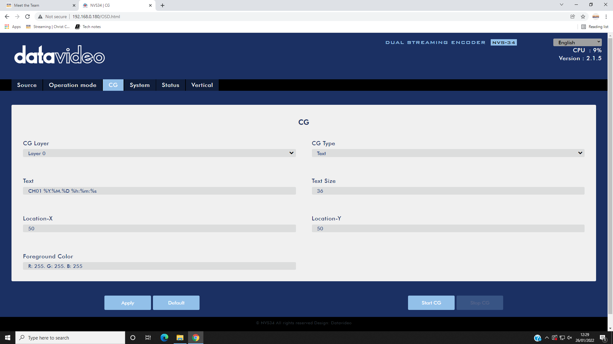
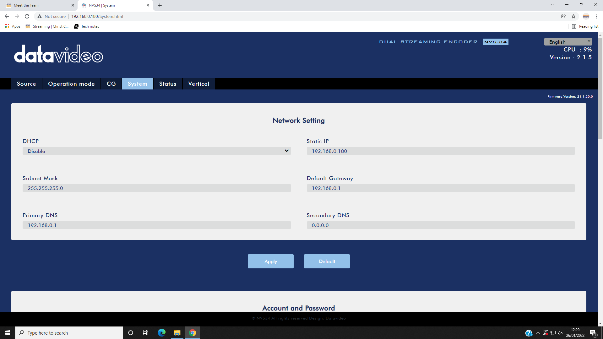
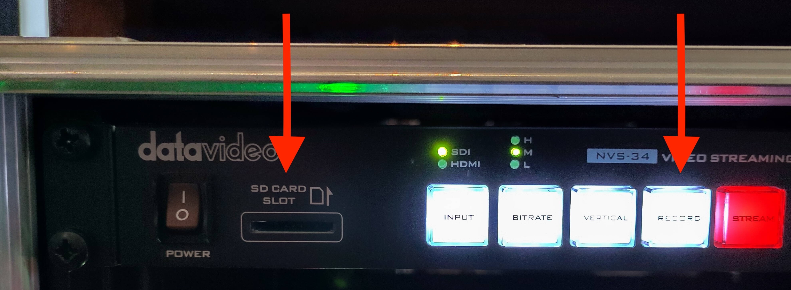

Live Streaming Tech Notes
Here are some technical notes on the CCWinch live streaming setup. See the official site for more operational information.
See also the list of known issues.
These notes are a work in progress.
Contents:
- Hardware lists the various hardware devices and how they connect together.
- PC Software lists the useful programs on the streaming PC.
- Operation provides some tips for streaming a service.
- Audio describes how to mute the sound or change the volume.
- Settings captures various settings for posterity and problem solving.
- Problem Solving lists some problems we've encountered in the past with their symptoms and how to fix them.
- Scheduling Services describes how to schedule streams on YouTube.
- Media Players shows how to set the contents of a media player.
- Tutorials links to some basic tutorials on live streaming.
Hardware
- Cameras - AW-HE40SWEJ
- Cables (SDI, Ethernet)
- Panasonic remote camera controller AW-RP50
- Blackmagic ATEM TV Studio Pro 4K (video switcher)
- Datavideo NVS-34 streaming encoder
- PC - for connecting to Facebook, etc.
- tp-link PoE+ switch TL-SL1218MP
- Blackmagic video assist 7" 12G HDR (combined scope/monitor/recorder/viewfinder)
Schematic Diagram
 (click image to view full size)
{kind=link}
Notes:
- (Not shown) Audio input from the sound system feeds via XLR connectors through the connection panel in the portable rack to the video switcher.
Camera 2 Alternative Positioning
In some situations (e.g. weddings) it is useful to position camera 2 on the stage (e.g. facing the couple being married).
To do this:
- Get a long SDI and a long ethernet cable from the livestreaming box in the store room.
- Using the ladder (often kept in the store room), plug these leads into the sockets on the column near the band. (Opposite the pillar where camera 3 plugs in.)
- Put camera 2 on the stage and run the cables across the floor and onto the stage.
- Be careful to use a cable trip protector and sand bags to avoid a trip hazard - see the photograph below.
- At the back of the live streaming cabinet, unplug the "camera 2" SDI cable from the "input 2" socket and plug the "camera L" SDI cable into that socket. Then unplug the "camera 2" ethernet cable from the "3 cam R" socket and plug the "camera L" ethernet cable into that socket.
- Afterwards, please be sure to reverse these steps so we are good for the usual Sunday setup.
{kind=link}
Blackmagic video assist 7" 12G HDR
The "scope" that's in the live streaming desk drawer can be used as a high quality monitor or viewfinder, as a "scope" for setting colour and white balance etc., and even to record to SD card or external drive.
It is sometimes a handy way of debugging problems. Simply connect an SDI cable from a SDI output (e.g. one of the spare outputs on the back of the rack) to the SDI input of the scope, plug in and connect the power adapter, and power on.
It might even be handy for the person using the camera controller to get a better idea of the image (but we'd need to connect the preview to the scope to avoid adjusting live images). The one downside is that it needs a tripod to sit on which it doesn't currently have, although it's fairly easy to prop up.
PC Software
The streaming PC desktop has various shortcuts for useful programs.

- Datavideo NVS-34 streaming encoder software
- Log in using "admin" and the password in the shortcut
- See Settings for its normal settings
- Blackmagic ATEM TV Studio Pro 4K (video switcher) software
- Google Chrome
- Camera 1 - direct access to camera 1 over TCP/IP
- Camera 2 - direct access to camera 2 over TCP/IP
- Camera 3 - direct access to camera 3 over TCP/IP
- Camera 4 - direct access to camera 4 over TCP/IP
- RP50Tool - software for the Panasonic remote camera controller AW-RP50
- See Settings for its normal settings
Operation
Set Up and Set Down
See the official site for set up and set down instructions.
During the Service
Usually one person operates the switcher and another operates the camera controller.
Video switching
Use the ATEM video switcher to choose which camera to stream. Set the preview to the next camera, then use the "cut" button to make it live (or the "auto" button to cross-fade, but use this sparingly - see below).
Tips:
- To overlay words from the AV team, press the switcher "song words" button.
- Most of the time, cut between the preview and programme (using the "cut" button on the switcher). During "unstructured" periods of a service (e.g. when the service leader suggests a period of reflection while the band plays quietly), cross-fading (using the "auto" button on the switcher) can work ok. Here's an example of an initial cut followed by cross-fading.
- During worship, cut relatively often when the tempo of the music is fast and less often when the tempo is slow.
- Avoid cutting between cameras showing people from the same angle and with the same size. Better to cut via another shot which is closer, further out, or from another angle.
- Try to avoid "flipping" the direction in which people are facing, e.g. by cutting between two cameras pointing in opposing directions.
- During speech, try to cut at the beginning of a phrase. During worship, try to cut at the end of a verse, or at least at the end of a line of a song.
- Try to anticipate what's going to happen next. For example, if the service leader is about to hand over to the band, cut via a shot which includes them both.
- If you think someone is going to take a little while to get set up, e.g. someone leading prayers may need to pick up a microphone or remove a face mask, then cutting just before this happens makes the viewers more forgiving of the delay. The cut effectively gives 5-10 seconds of extra attention. Here's an example.
- When videos are played, don't forget to turn the Christ Church logo off. Also, start with a wide shot of the church which includes the screens and cross-fade to the video as it starts (here's an example). At the end of the video, either cross-fade back to the wide shot or cut if you think it seems more appropriate.
- When you have two cameras next to each other, you can cut back and forth between a head and shoulders shot of a speaker and a shot of their full height. Since the angle doesn't change, this is less distracting than cutting from side to side. Here's an example.
- If you aren't sure what a cut will look like, try it out on the preview pane of the multiview monitor by switching the preview between the cameras you are considering cutting between.
- Try to turn off the song words as soon as they are no longer needed. It may be worth having a word with the person on the AV desk before the service starts and asking them to delay a couple of seconds after a song finishes before putting the Christ Church Winchester logo back on the screen as this has a bad appearance on the live stream.
- To display one of the slides, such as the words for use while people are taking communion, select media player 1 using either Shift key and "MP 1".
- When the live stream is being displayed on screens in church, you can use the ATEM switcher software "Auxiliary 1" menu to control what is displayed on the screens. This is usually "clean feed 1" (the live stream programme minus any downstream key, such as the Christ Church logo). But you could set it to a tight shot of the preacher, for example, so that you can cut to a wide shot for the online audience without affecting what appears on the screens in church. Remember to set Auxiliary 1 back to "clean feed 1" afterwards.
Camera Control
Use the remote camera controller to operate the remote PTZ cameras.
Tips:
- Choose a preset or manually zoom/pan each camera unless it is "live" (being displayed on the "programme" pane of the multiview monitor).
- Keep one camera on a wide "safety shot" so the switcher operator can cut to this if necessary, e.g. if the preacher starts moving around suddenly during a sermon. Camera 4 is often a good fallback for a wide shot as its quality isn't the best. Here's an example where the preacher caught us off-guard, but we recovered using camera 4.
- After the countdown, start with a wide "establishing shot" to set the scene (as well as the tone/mood). Here's an example.
- During worship, sometimes a close shot of one or two people in the band (here's an example) or of an instrumentalist's hands (an example) can add variety and interest. This works particularly well if the switcher operator is familiar with the song and can anticipate when instrumental sections are coming up.
Audio
The audio on the live stream is largely determined by the input from the sound desk (or the AV desk when a video is being played), how the vocalists in the band use their microphones, and how the congregation sings. But there are a couple of things you can control, using the audio mixer in the ATEM software (see PC Software).
You can also get a rough idea of the volume by looking at the programme on the multiview monitor. The volume level shows on the left and should occasionally reach -5 dB.
If you need to hear the audio side of the live stream, use the scope (described in see Hardware):
-
Plug the SDI cable attached to an ATEM output into the SDI input socket of the scope.
-
Screw the scope power connector into the scope.
-
Plug the headphones into the headphone socket of the scope.
-
Turn on the scope by pressing the small power button on the side.
(You could also plug the headphones into the PC, unmute the audio on the PC, and listen to the YouTube stream on Chrome. The big downside of this approach is that there is a considerable lag between what's happening in church and what appears on YouTube.)
Keep an eye on the chat sections of the Church Online Platform for comments about the sound quality from the host or the online congregation.
Muting
Sometimes it's necessary to mute the sound. For instance, if the service leader asks people to talk to their neighbour, the sound should be muted to avoid picking up individual conversations (this has happened in the past - a particular risk for anyone near a microphone). Also, during the distribution of communion, it is worth muting the sound until the worship band starts playing.
To mute the sound, use the audio tab (shown below) of the ATEM switcher software on the live streaming PC. There is an XLR audio input which can be muted by clicking "on". Click it again to unmute.

Volume
The volume is controlled by the level on the XLR audio input and the Master volume control, both on the udio tab (shown above) of the ATEM switcher software on the live streaming PC.
To increase the volume, move the XLR and Master sliders up, keeping an eye on the volume level on the multiview monitor.
To decrease the volume, move the XLR and Master sliders down.
Initially, both sliders are at about -0.6 dB (this figure is shown below the slider - the number above is the maximum reached since power on or the number being clicked).
Settings
Network IP addresses
| Device | IP address |
|---|---|
| Datavideo encoder | 192.168.0.180 |
| Camera 1 | 192.168.0.181 |
| Camera 2 | 192.168.0.182 |
| Camera 3 | 192.168.0.183 |
| Camera 4 | 192.168.0.184 |
| Panasonic Camera Controller | 192.168.0.188 |
| Blackmagic ATEM | 192.168.0.189 |
Panasonic remote camera controller AW-RP50
Launch the RP50Tool program (see Software) and set the RP1 IP address to 192.168.0.1881 on the IP Address tab and click the "Set" button. See the image below.
{kind=link}
Then go to the Setting tab and click the "Refresh" button. The IP addresses of the cameras should be as in the screenshot below. If necessary, update the settings and click the "SET" button.
 (click image to view full size)
{kind=link}
If the IP address of the camera controller has changed, you'll need to use that IP address instead.
Datavideo NVS-34 streaming encoder
Source tab:
 (click image to view full size)
{kind=link}
Operation mode tab:
Note: the RTMP URL and Stream Name correspond to the YouTube stream's Stream URL and Stream key, respectively.
 (click image to view full size)
{kind=link}
 (click image to view full size)
{kind=link}
CG tab:
 (click image to view full size)
{kind=link}
System tab:
 (click image to view full size)
{kind=link}
Problem Solving
In general, try to narrow down and eventually isolate the cause of the problem. If there is a problem with one or two cameras and you can't fix it before the service starts, you may be able to make do with the remaining cameras.
Remember the all-important line from "The IT Crowd" TV series: "Have you tried turning it off and back on again?".
If you get stuck, try asking on the "Streaming" Slack channel or see if there's someone around in church who can help.
The following problems are organised by problem symptoms, each with possible explanations and fixes. If you find a problem not listed here, please tell others about it so it can be added.
ATEM switcher is powered off ("no lights")
This is often caused by the power cable coming loose when the switcher is slid out of the rack for operation. Reach over the back of the switcher and plug the power cable back in on the right hand side.
The multiview monitor is black
Check the monitor power and display cables are securely plugged in at both ends.
The camera controller is powered off ("no lights")
Check the power cable hasn't come loose.
The streaming PC display is black
Check the display power and display cables are securely plugged in at both ends.
The encoder is powered off ("no lights")
The encoder (the topmost unit in the streaming rack) is powered by a lead inside the back of the streaming rack which may become disconnected. Ensure the mains lead is plugged in at both ends.
The video of a camera does not appear on the multiview display
This may be because the camera has not been powered on. Use the camera controller to power all the cameras off and back on.
To see if the camera is powered on, double click the relevant camera icon on the streaming PC desktop. If you see a picture from the camera, it is powered on and the problem may be that the SDI (video) cable is not properly connected to the camera (or to the back of the rack or to the back of the ATEM switcher). Disconnect and reconnect each plug in turn to ensure it is properly connected.
A camera cannot be controlled by the camera controller
This may be because the power-over-ethernet (PoE) cable has been plugged into the wrong socket on the affected camera. Make sure the cable is plugged into the left-hand socket. When re-plugging PoE cables, it is best to power all the cameras down first and power them back up afterwards.
The camera controller fails to operate the cameras
The camera controller may still be in menu mode, in which case the "menu" button will be lit. Press the menu button to exit menu mode.
Alternatively, the controller may be operating a group of cameras other than group 1. You need to select group 1, thus:
- Press "menu" and then "8"
- Select "group" by turning then pressing the F1 dial
- Select "group select" by turning then pressing the F2 dial
- (I presume) Press "1" to select group 1.
Alternatively, it has been known for the camera controller to reset itself to factory defaults.
Try power-cycling the camera controller to see if this fixes the problem. If not, you may need to go to the setup menu and re-enter the IP address of each of the cameras: 192.168.0.181-184 (for cameras 1-4). The cameras also need to be set to "network" connection rather than "serial". When entering an IP address, press F2 to select each "dotted decimal" number of the IP address in turn and turn F2 to change the current number. Refer to "Changing the camera numbers" on page 34 of the basic manual for the camera controller (available under Hardware) for how to set camera IP addresses. The IP address of the camera controller also needs to be set to
the correct value: 192.168.0.188. If you prefer, you can use the RP50Tool shortcut on the streaming PC desktop to make these changes (but beware that the tool uses the camera controller's IP address to communicate with it, so this will need to be changed as necessary).
If the camera controller cannot be made to work, try using the camera controller software ("RP50Tool") on the streaming PC.
If all else fails, you can gain some basic control of the cameras over TCP/IP using the shortcuts on the streaming PC desktop. See Software.
The encoder stream button flashes red
This may be due to the encoder looking at the wrong input. Open up the encoder software on the streaming PC (there's a shortcut on the desktop, with a note of the admin password on the shortcut), select the "source" tab, and ensure that the SDI source is selected (rather than HDMI).
When the encoder is streaming normally, the stream button should be lit red continuously.
The "go live" icon is greyed out on YouTube
This may be due to the stream in question having already been used, even if only briefly. You need to create a fresh stream. See Scheduling services for instructions.
The live stream does not appear in the preview on YouTube
This may be because the video encoder in the rack is not yet in streaming mode (the "streaming" button needs to be lit in red). Press the streaming button on the video encoder to start streaming. Note: this isn't usually necessary, so be patient while YouTube connects to the stream as this can take up to 20-30 seconds.
YouTube shows "no data" or "poor connection"
This may be an intermittent or permanent problem and means that the stream will not record properly.
You can record the stream to a SD card using the video encoder (NVS-34, at the top of the live streaming rack). Ensure a SD card is inserted and press and hold the "RECORD" button for a few seconds. Release the button and, after flashing, it should light up continously red showing that the stream is being recorded to the SD card.

At the end of the service, press the "RECORD" button on the encoder again. This will end the recording and the MP4 files on the SD card can be stitched together (each file seems to have a maximum size of 4 GB) and uploaded to YouTube later.
(If there is a temporary internet outage and the YouTube stream cannot be connected to after the internet is back up, it may be possible to create a new stream and record to that.)
For background information on one such internet problem see this issue.
The internet is not accessible from the live streaming PC
Ensure the AV desk PC is switched on (it doesn't need to be logged in). Also ensure that the network splitter mains switch is turned on - this is next to the AV desk mains switch (on the wall, low down, at the right hand side of the sound desk).
Alternatively, the antivirus/firewall software on the streaming PC may be out of date. Temporarily disable the antivirus/firewall from the network settings to work around this.
Another cause of losing internet (across the whole site!) is if the camera controller has lost its settings and set its IP address to the default of 192.168.0.10 which conflicts with the church's main internet gateway. See The camera controller fails to operate the cameras for how to set the camera controller settings back to what they should be.
Poor sound quality on the live stream
Sometimes the host or a member of the online congregation will point out that the sound is poor or that there is a specific problem with the sound. Check the sound level on the "live" panel of the multiview monitor. If it seems too low, check with the sound desk operator that the sound desk is correctly set up. If it's still too low, you can boost the volume by using the ATEM switcher software on the live streaming PC. In the audio tab there is a master volume slider and a xlr slider which can be increased.
Song words not outlined in black
If the song words are no longer outlined in black, reload the ATEM settings (but not during a live stream in case this interrupts it) and save the startup state. A good set of ATEM settings is in the Documents folder of the live streaming PC, dated 31 March 2024. Reload them using the ATEM software and use the ATEM software to save the startup state.
Robotic sound when the live stream is displayed on screens in church
Not everyone can hear this problem when it occurs.
The solution is to use the Roland V-8HD menu to Mute HDMI input #2 from the ATEM (and turn the level down to -70dB to make sure). The menu is shown in the photograph below:
{kind=link}
For details, see this issue.
Problems with the song words or AV input ("camera 5")
The AV and live streaming desks may have been powered up in the wrong order. Power down the AV and live streaming desks and then power up the live streaming desk and PC before powering up the AV desk and PC. This ensures that the graphics card in the AV PC detects the correct inputs.
There is also a Microsoft Word document on the AV PC which describes the display arrangement ("3, 4, 1|2", where displays 1 and 2 are mirrored) and EasyWorship settings.
YouTube connection problems
If the live stream fails or YouTube reports buffering problems for more than a second or two, there may be an issue with the internet connection. There's not much you can do about this, but please report it so we can look into it.
Scheduling Services
Each service needs a YouTube stream. Essentially, you can create a YouTube stream from a past stream.
This 8 minute video shows how to schedule a new YouTube stream except that now we are using YouTube as the platform for the online congregation, you should make the stream public and enable "chat" and "chat replay" and there is now no longer a need for a "catch up" playlist, so new YouTube streams do not need to belong to a playlist.
You may need to schedule a stream in an emergency if you encounter a situation where the stream you want to "go live" has already been used. The "go live" icon is greyed out and you need to schedule a new stream. It's relatively easy to do this from the streaming PC if you hit this problem.
We've also started adding a custom thumbnail to each stream. There's one for "all in" services and then five 11am and five 7pm thumbnails - one for each week of the month. Download and unzip this zipfile for the thumbnails.
Weddings and Funerals
For weddings and funerals, create an unlisted YouTube stream with an appropriate thumbnail. Enable "chat", but disable "chat replay" to be on the safe side.
Once you've created the stream, look for it in the list of live content in the Christ Church YouTube channel. Click the three dots next to the stream and select "Get sharable link" to get a link which can then be distributed to the family, friends, and others.
Media Players
Media player 1 on the ATEM is used to display an image on the live stream (independently of the AV desk). This is useful when the stream audio and/or video has been turned off or when the live streaming team need to make an announcement to the online congregation. (The YouTube live chat isn't as effective since some viewers don't see the chat.)
Examples of when this may be appropriate:
- During part of a communion service.
- When copyrighted material is being used in church.
- During a baptism or dedication at the parents' request.
- During a sensitive personal testimony.
To display a given image on the live stream follow these steps:
-
Download the image onto the live streaming PC.
-
Add the image to the ATEM's media pool (see below).
-
Load the image from the media pool to media player 1 as follows:
a. Open up the ATEM software application on the live streaming PC.
b. Select the "Media" tab (see the screenshot at the bottom of this page).
c. Drag the required image from the media pool in the centre to media player 1 on the right.
-
On the ATEM, preview media player 1 using either Shift key and "MP 1".
-
Cut at the appropriate time.
Notes:
- Media player 2 is dedicated to adding the Christ Church logo to the live stream and should not be used for displaying images.
- The term "media player" might give the impression that a video can be played, but this isn't the case. AVI, MOV, MP4, and similar formats are not supported. It is apparently possible to display "image sequences", but that seems pretty tricky.
Adding an image to the ATEM's media pool
An image can be added to the ATEM's media pool by following these steps:
- Download the image onto the live streaming PC.
- Opening up the ATEM software application on the live streaming PC.
- Select the "Media" tab (see the screenshot below).
- Locate the image in the Local Library on the left.
- Drag the image to one of the "stills" slots in the centre.
{kind=link}
Video Tutorials
- Live streaming for beginners - a good place to start
- Blackmagic video switcher - a tour of the basic functions of the video switcher
- Framing - rule of thirds, head room, and lead room